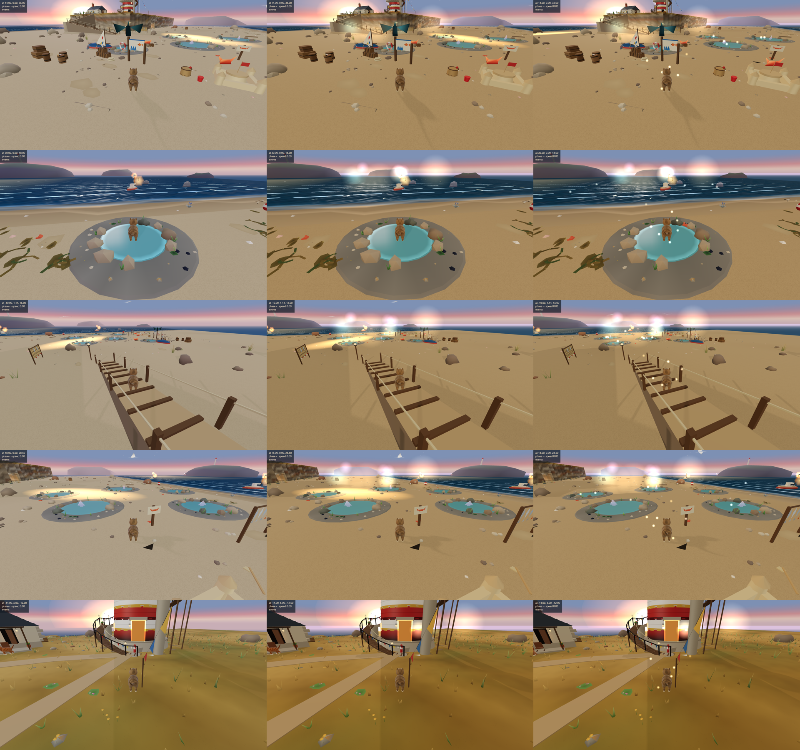

PLAY camera, 1280x720 (tools/verify/verify-lighthouse.html, shots lb7_*, ?place=1&wx=off). One row per vista: arrival beach, the boats from the pool by the pier, the cliff path over the bay, the tide pools, the tower door. Columns: BEFORE (pass 6) | AFTER | AFTER, golden moment (4.8 s still: sparkle on the pools, the water and round the door, plus a soft chime in the game). In a vista: a warmer gold sun, the fill warm so her fur has a warm rim, a violet far haze, three soft haze bands (warm, teal, violet), a glow on the focal point (lamp, boat, bay, door), deeper warmer sand at the frame. Honest note: the arrival view is still mostly sand (the camera is fixed behind her); it now has the lamp glow and haze over the tower, but not a new object. Whole scene triangles, meshes and casters unchanged (three Points added, no mesh).
